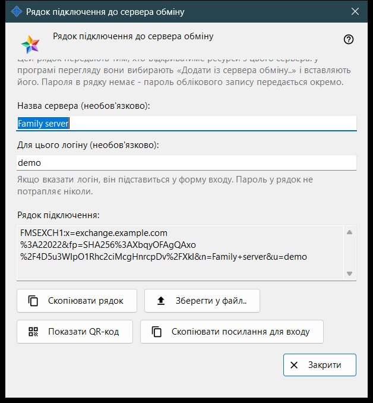
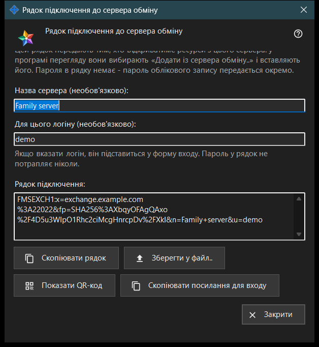

Рядок підключення до сервера обміну
Призначення
У цьому вікні складається рядок підключення, за яким інші пристрої знаходять цей сервер обміну й перевіряють його сертифікат. Вікно відкривається кнопкою «Рядок підключення і QR-код..» у налаштуваннях сервера обміну або у вітанні сервера під час першого запуску. Вікно нічого не змінює в налаштуваннях.


Порядок дій
- Переконайтеся, що в сервера є сертифікат і задано адресу для клієнтів.
- Відкрийте вікно: рядок з'являється одразу.
- За бажання введіть назву сервера та логін; рядок перебудується за мить після того, як ви перестанете друкувати.
- Скопіюйте рядок, збережіть його у файл, покажіть QR-код або скопіюйте посилання для входу.
- Передайте результат іншій людині, а пароль облікового запису - окремо.
- Натисніть «Закрити».
Елементи вікна
Коли кнопка доступна
Кнопка «Рядок підключення і QR-код..» доступна лише тоді, коли в сервера є сертифікат і задано адресу для клієнтів. Якщо адреса порожня, кнопка вимкнена, а підказка під нею каже: «Спершу задайте адресу для клієнтів: без неї рядок підключення скласти не можна.» Усередині вікна кнопки вимкнені, якщо рядка немає.
Назва сервера і логін
«Назва сервера (необов'язково):» - до 64 символів; вона записується в рядок як назва сервера. «Для цього логіну (необов'язково):» - від 3 до 64 знаків (a-z, 0-9, крапка, підкреслення, дефіс); цей логін підставляється у форму входу на пристрої, який використовує рядок. Пароль у рядок не потрапляє ніколи.
Рядок підключення
У полі «Рядок підключення:» (лише читання) показано результат: адресу для клієнтів, відбиток сертифіката та необов'язкові назву й логін. Пристрій, що отримав рядок, довіряє відбитку з нього, тому порівнювати його вручну не потрібно.
Копіювання і збереження
«Скопіювати рядок» кладе рядок у буфер обміну звичайним текстом, бо він не є секретом; рядок нижче повідомляє «Рядок скопійовано.» «Зберегти у файл..» записує текстовий файл .fmsexch (запропонована назва exchange-server.fmsexch) і показує шлях до нього; інший пристрій читає такий файл кнопкою «Відкрити файл..» у вікні облікового запису обміну. Якщо буфер обміну зайнятий або файл записати не вдалося, рядок стану повідомляє про це.
QR-код і посилання для входу
«Показати QR-код» відкриває картинку з тим самим рядком для сканування; вона називає сервер і не дає доступу ні до чого. «Скопіювати посилання для входу» з'являється лише тоді, коли цей сервер віддає вебклієнт; воно копіює посилання для браузера з тим самим рядком.
Якщо рядок не вдалося скласти
Рядок попереджувального кольору називає причину: назва або логін поза допустимими межами; у сервера немає сертифіката (запустіть сервер один раз); сервер обміну не відповів. Усуньте причину - і рядок перебудується. «Закрити» завершує роботу вікна; назва й логін не зберігаються.
Налаштування менеджера · Налаштування спільного доступу SFTP · Налаштування сервера обміну